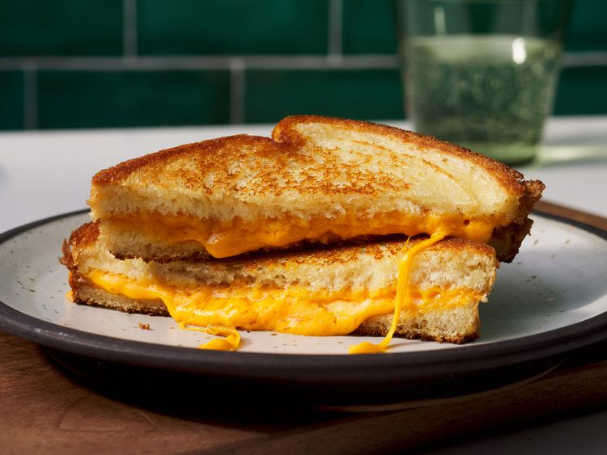

Grilled Cheese Sandwich
Home

Description
The grilled cheese sandwich is the ultimate comfort food. It's golden and
crispy on the outside, with a warm, gooey cheese filling on the inside.
This simple sandwich is popular worldwide and can be made in minutes using
just bread, cheese, and butter. While it sounds basic, the secret to a
great grilled cheese lies in using good-quality bread and cheese, along
with proper toasting. You can enjoy it on its own as a quick snack, pair it
with soup for a hearty meal, or customize it with add-ins like tomatoes,
onions, or even bacon for extra flavor.
Ingredients
- 2 slices of sandwich bread (white, brown, or sourdough)
- 2 slices of cheddar cheese (or mozzarella, American, or any melting cheese)
- 1 tablespoon butter (softened, for spreading)
- A pinch of black pepper (optional)
- Tomato slices (optional, for variation)
Steps
- Take two slices of bread and spread butter evenly on one side of each slice.
- Heat a skillet or non-stick pan over medium heat.
- Place one slice of bread, butter side down, on the hot pan.
- Add the cheese slices on top of the bread. If using extras like tomato slices, add them now.
- Place the second slice of bread on top, butter side up.
- Cook until the bottom slice is golden brown and crispy, about 2-3 minutes.
- Carefully flip the sandwich with a spatula and cook the other side until golden and the cheese has melted.
- Remove from the pan, let it cool for 1 minute, then slice diagonally.
- Serve immediately while warm, with ketchup, soup, or fries.